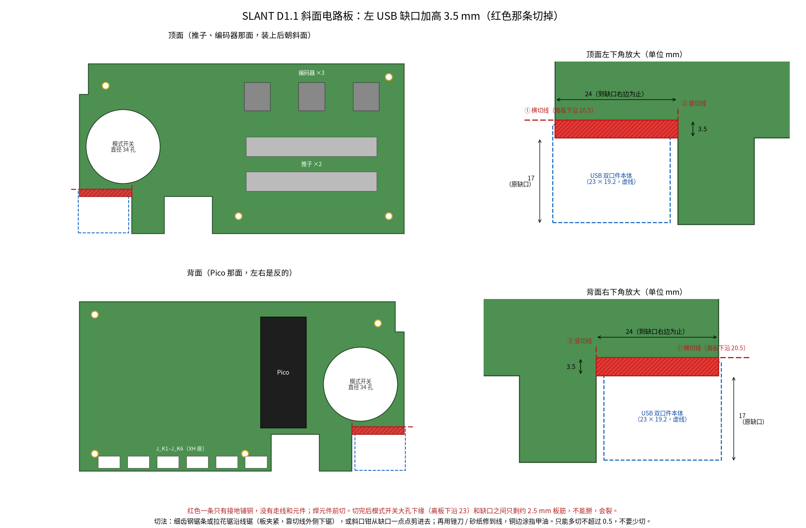
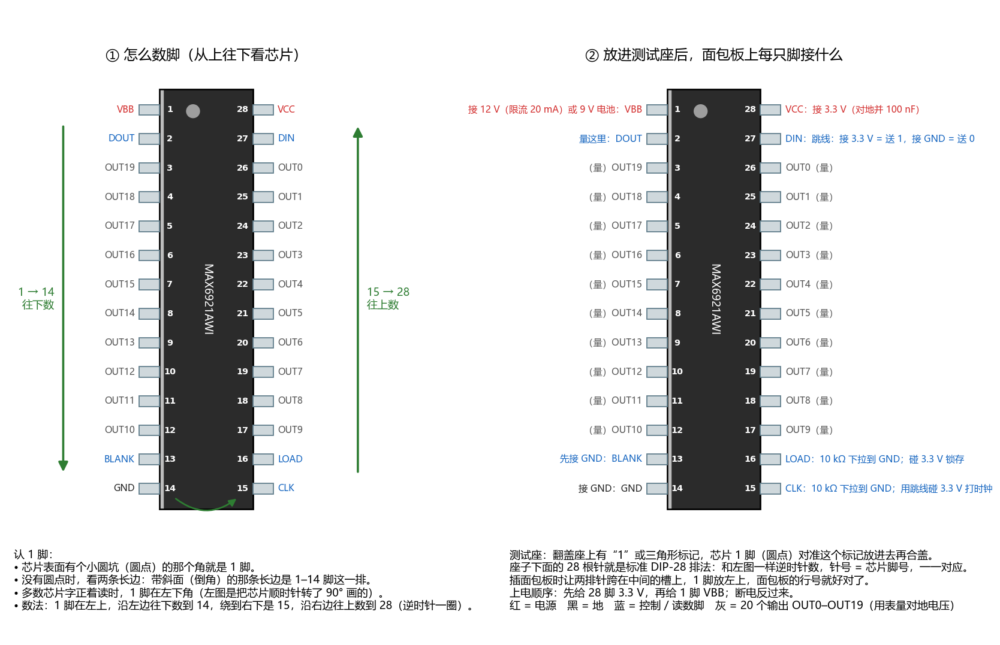
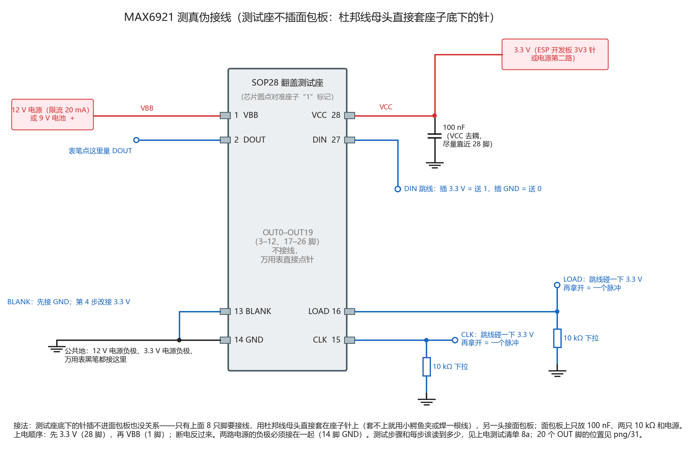
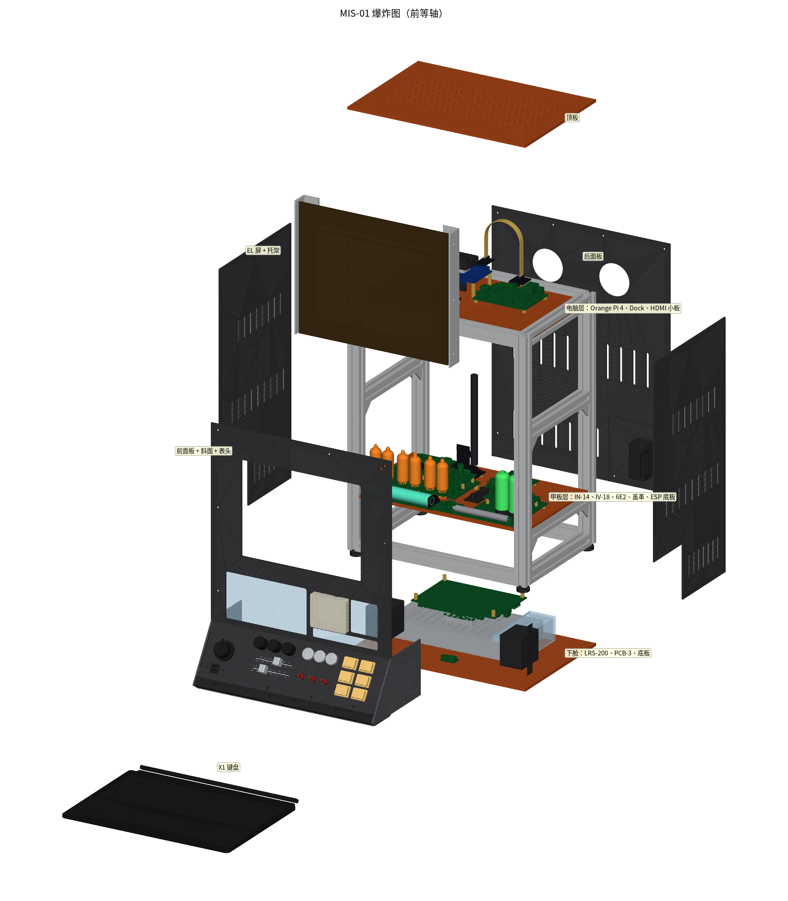
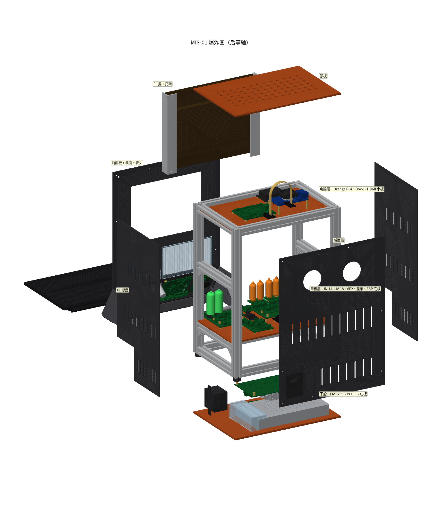
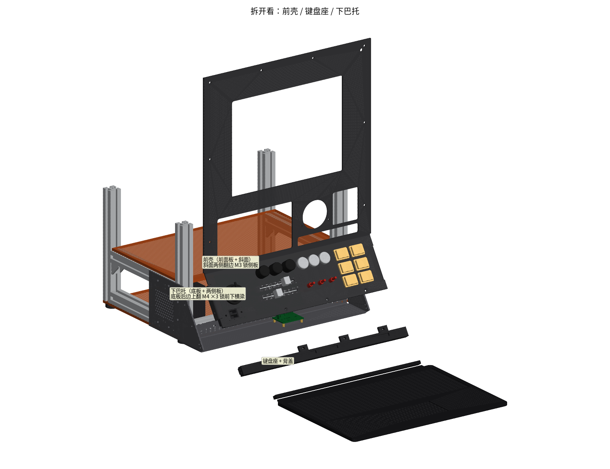
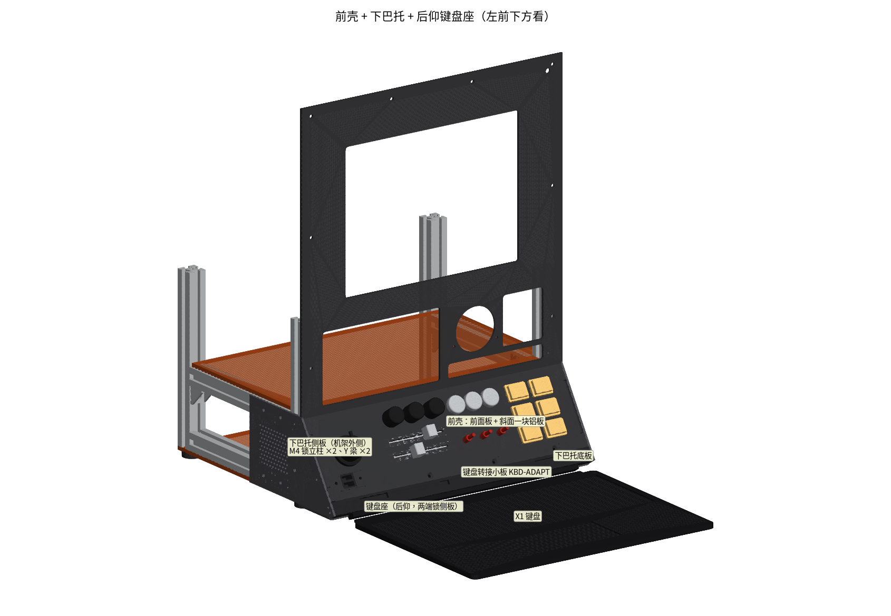
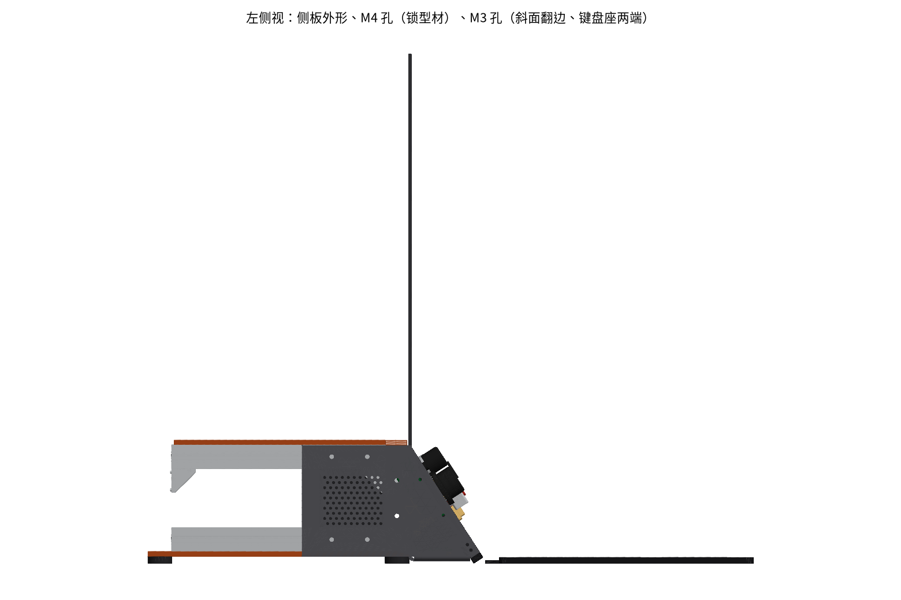
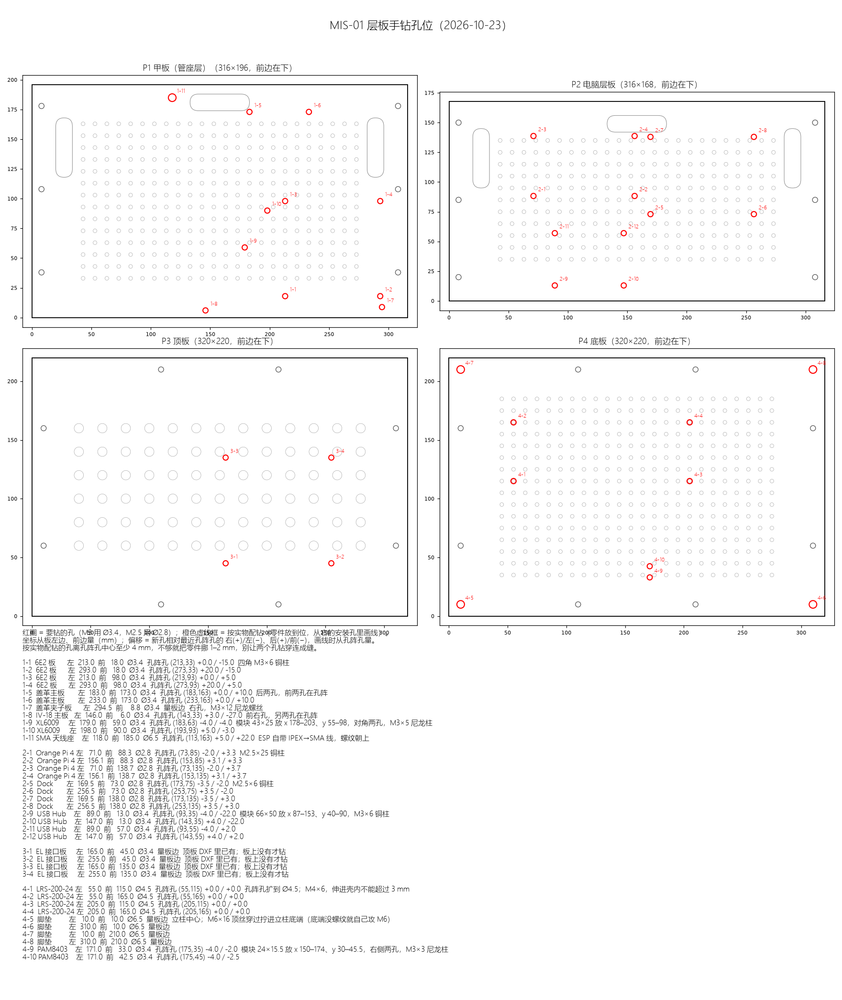
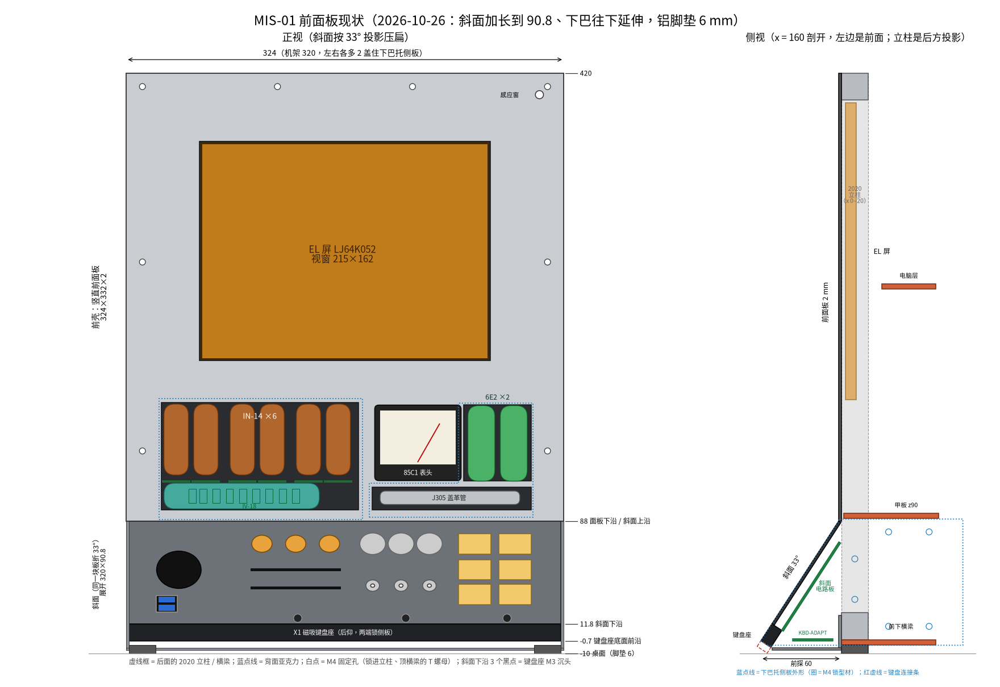

后面每块板都要用这些工具；斜面板的缺口必须在焊元件之前切；淘宝的 MAX6921 要先确认是真货，再决定焊不焊到 IV-18 板上。



- 工具：可调限流电源（0–30 V、能设 0.1–1 A 限流）、数字万用表（输入阻抗 10 MΩ，DC 1000 V 档）、示波器（有就用）、 绝缘手套或至少单手操作、放电棒（10 kΩ 5 W 电阻 + 绝缘夹线）。 - 高压板（HV-UNI 170/250 V、盖革 400 V、6E2 250 V、IN-14 170 V）： 1. 碰板子前先断电，等 ≥ 4 s（盖革）/ ≥ 3 s（HV-UNI），再用表量高压点 < 30 V，必要时用放电棒放一下； 2. 单手操作，另一只手离开机箱；表笔先夹地再碰高压； 3. 焊完清洗助焊剂，高阻节点（盖革分压链、阴极检测、6E2 栅极）和高压焊盘一圈刷三防漆。 - 第一次通电一律用限流电源，限流设到"正常电流 × 1.5"，看电流是否在预期内。 - 库存三极管焊前先用万用表二极管档定脚序再焊：库存 2N3904、2N3906、S8050 和 C1815、S9013 等混在同一盒， C1815 是 E-C-B，S8050 不同厂家有 EBC 和 ECB 两种（盖革 Q6 用错会让蜂鸣器常通、线圈过流）。 - 成品线（USB-A 转 XH、DC 插头线等）到货先用万用表核对色序和中心正负，再接板。
器材：SOP28 宽体（300 mil）翻盖测试座（免焊，芯片放进去合盖即可，DIP28 引脚插面包板；2026-10-27 用户实测座子针插不进面包板——改用杜邦线母头直接套座子上要接的 8 只针，
面包板只放阻容和电源，OUT 脚用表笔直接点针，接线图见 png/32_max6921_test_circuit.png）+ 面包板；3.3 V（ESP 开发板 3V3 或电源）；
VBB 用 12 V 电源（限流 20 mA）或一节 9 V 电池（规格书下限 8 V）；万用表。可选 20 只 LED 各串 10 k 到 GND，接在 20 个 OUT 上，看着更直观。
SOIC-28W 脚位（测试座 DIP28 引脚号与芯片脚号一一对应）：1 VBB、2 DOUT、3–12 = OUT19…OUT10、13 BLANK、14 GND、15 CLK、16 LOAD、17–26 = OUT9…OUT0、27 DIN、28 VCC。
0. 看外观：丝印 MAX6921AWI、字迹清楚、各片批号格式一致；表面有打磨痕迹、一面亮一面哑、脚上有旧焊锡的都可疑。
1. 不上电，万用表二极管档，红笔接 14 脚（GND），黑笔逐个点其余脚：20 个 OUT 脚读数应彼此接近（约 0.3–0.8 V 一类的二极管压降）。
全部 OL（空壳）、全部接近 0（击穿）、或某几个 OUT 明显和别的不一样 → 不要用。
2. 接线：28 脚 VCC、14 脚 GND，VCC 对地 100 nF；CLK（15）、LOAD（16）各 10 k 下拉到 GND；BLANK（13）先接 GND；DIN（27）用一根跳线。
先上 VCC 3.3 V，再上 VBB（规格书：VCC 没电时不要驱动输入脚）。上电后两路电流都应很小（mA 以下级）；一上电就几十 mA 或发烫 → 假货/坏片。
3. 全 1：DIN 接 3.3 V，用跳线碰 CLK 到 3.3 V 再松开，重复 25 次以上（触点抖动多打几个时钟没关系，进去的都是 1）。
DOUT（2 脚）应 ≈ 3.3 V。再把 LOAD 碰一下 3.3 V → 20 个 OUT 都 ≈ VBB（空载差不到 1 V）。
4. BLANK：BLANK 接 3.3 V → 20 个 OUT 全 ≈ 0 V；接回 GND → 全部回到 ≈ VBB。
5. 全 0：DIN 接 GND，CLK 碰 25 次以上 → DOUT ≈ 0；LOAD 碰一下 → 20 个 OUT 全 ≈ 0。
6. 移位长度（区分换标的别的芯片）：LOAD 一直接 3.3 V（锁存器透明，OUT 跟着移位寄存器走），DIN 接 3.3 V，CLK 慢慢一下一下碰：
高电平从 OUT0（26 脚）开始一格一格往 OUT19（3 脚）推进（抖动时一次可能走几格，但一定是从 OUT0 连续的一段）；
OUT19 变高的同时 DOUT 变高——说明正好 20 级。中间有 OUT 跳过不亮、或 DOUT 早于/晚于 OUT19 变高 → 不是真货。
7. 可选耐压：VBB 换成 24 V 重复第 3、4 步（本板实际用 35 V，规格书 VBB 上限 76 V）。
全部通过再从测试座取出、焊到 IV-18 主板（1.27 mm 脚距；按设计记录_IV18_D1 第五节第 6 条，用钢网 + 加热台和主板其他贴片件一起回流；回流后放大镜查脚间连锡，连锡用烙铁 + 吸锡带修）。测试座里芯片 1 脚对准座子上的 1 脚标记。没有高压、元件少，用来练手：烙铁温度、上锡量、焊点形状。键盘板的贴片件嘉立创已贴，只焊两个直插件；IN-14 小板 7 块一模一样，焊到第 7 块手就熟了。
1. 成品"USB-A 公头转 XH 4P"线各家针序不统一：先接线不接键盘排线，USB 插电脑，量 J_USB-1 对 J_USB-4 = +5 V（1 = 5V、4 = GND）。
反了就把线端 XH 胶壳里的针挑出来对调，再接键盘排线（反接 5 V 会烧键盘）。
2. 插 01AY247 排线（金手指朝下，座子开口朝板边），电脑应识别出 ThinkPad 键盘；不识别先查 D+/D− 跳线。辉光板（180–185 V）和 6E2 板（250 V）的高压都来自它，必须先单独调好电压再插到宿主板上。这是第一块高压板，借它把安全习惯练熟；焊接图“电路说明”里有升压原理（电感储能 → MOS 关断 → 二极管送到输出电容）。
1. 不接负载，RV1 先拧到最大阻值（最低电压），J1 接 12 V / 0.5 A 限流：空载输入电流应 < 50 mA。
2. 量 TP1（DC 600 V 档），慢慢调 RV1 到目标：辉光管那块 180–185 V（2026-10-27 核对更正：原写 170 V，按第 5 节第 3 步与 NIXIE-DRV D1.1 复查初调 180–185 V）、6E2 那块 250 V、备用那块 180 V。可调范围约 112–296 V。
开机过冲应 < 4 %（仿真：补偿改 680 k / 22 nF / 100 pF 后 2.6–3.7 %）。
3. 断电后看 3 s 内降到 30 V 以下（泄放 440 k）。
4. 过压保护（可选，全程只碰低压侧，每次改动都先断电并确认 TP1 < 30 V）：
a) 断电，R17 由 1 k 临时换 4.7 k（门限降到约 242 V），通电后 RV1 调到最高：输出应被钳在约 240 V，不再上升；做完换回 1 k。
b) 或断电后抬起 R8 一只脚（反馈上端开路），通电输出应稳在约 324 V；做完焊回。注意是"断开"R8，不是短接——短接只会让输出降到约 2/3。
4b. 焊前：泄放电阻 R21、R22（220 k 库存件）量一下本体，迷你体（< 2 mm 粗）就换 CCO 1/4 W（C119374），每只要承受约 150 V、0.1 W；
库存 2N3906 和 LED 先用万用表定脚。Q1 的 TO-220 散热片就是漏极（高压），套热缩管。
TP1/TP2 只隔 3.7 mm，量高压时地线用鳄鱼夹夹 TP2，表笔滑一下就是高压对地短路。
5. 带载：170 V 档接 8.5 kΩ / 5 W（20 mA），电压跌 < 3 V；Q1 摸着温热（296 V/10 mA 时仿真温升约 37 °C）。三块板的贴片件用同一张钢网刷锡膏、上加热台一起熔化（回流）。先做 IV-18（最难的是 SOIC-28，脚距 1.27 mm），练熟了再做电源板（4 颗 2×2 mm 的 VQFN 电子保险最难）和 EL 接口板。每块板先把贴片全部回流完、检查过，再焊直插件。
后面所有板子都从这块板取电，所以它先单独测通。先用限流电源模拟 24 V，全过了再接明纬 LRS-200（这一步才碰 220 V 交流）。
装配：两个 NID100 插在排母上（每个 1×6 + 1×7，塑高 8.5），1 脚对丝印方焊盘；插好后用扎带穿两侧长条孔把模块捆在板上，
扎带头拧到模块侧面（板子倒挂，模块针只插进约 3 mm，不捆会松）。
1. 不接任何负载，J_24V 接限流电源 24 V / 0.5 A：
- 空载电流应 < 0.3 A；NID100-12 输出 12.0 V ± 0.2、NID100-5 输出 5.0 V ± 0.1；C_LDOO（或 C_INV）两端 3.3 V（2026-10-27 核对更正：板上没有 3.3 V 测试点，这两只电容都在 +3V3 与 GND 之间）。
2. PFAIL：慢慢把 24 V 往下调，约 21.0 V 时 PFAIL_EL_N、PFAIL_ESP_N 变低（TP 测），调回约 21.9 V 恢复。（仿真 21.01 / 21.92 V）
（2026-10-27 核对补充：Q_PFD、Q_PFO 是集电极开路，本板 PFAIL_EL_N / PFAIL_ESP_N 上没有上拉——上拉在 EL-IF（RPF 10 k）和 ESP 底板（R4 10 k）上。
单板测时在 TPPFD、TPPFO 各和 3.3 V（C_LDOO 正端）之间临时接 10 kΩ 上拉，否则看不出高低。）
3. 主机域：主机钮子断开时 J_OPI、J_HUB、J_EL_PWR 都是 0 V；钮子合上 → 5 V、5 V、12 V/5 V 出来，绿灯亮。
接电子负载或功率电阻验证限流（可选）：Pi 路约 4.9 A、Hub 路约 2.8 A、EL 12 V 约 3.7 A、EL 5 V 约 1.0 A 时断开。
EL 12 V + Dock 那一路（C_DVC 已改 3.3 nF）上电约 18 ms 升到 12 V，接上 EL-IF 和 Dock 后反复开关几次，不应锁死。
四颗电子保险都是锁死版：某一路跳了不会自己恢复，要把主机钮子关掉、等 Pi 关机后再开。
4. 高压域：高压钮子合上但 HV_EN 不给（J_CTL-4 悬空）→ HV-A/B/C 都是 0 V；J_CTL-4 接 3.3 V → HV-A 12 V、HV-B 12 V（红灯亮）、HV-C 5 V；
钮子断开时无论 HV_EN 怎样都是 0 V。（仿真：关时三路 0 V）
5. HOLD：主机钮子断开、J_CTL-3 接 3.3 V → 主机 5 V 仍有输出（ESP 保持）。
6. 常电分路：J_INST 24/12/5 V、J_KEYL 12 V 都在。辉光、6E2、盖革、IV-18、表头都由 ESP32 控制，后面每块显示板都要接到它上面调，所以它排在显示板前面。固件已经在裸开发板上测过 197 项，这里主要验底板接线和默认电平。
固件先在裸开发板上（USB 供电）跑通：按 firmware\esp32s3\ESP32-S3功能规格.txt 第 7 节，协议、看门狗、各输出默认电平。
1. 不插开发板、不接任何外设板，J_CTL 接 PCB-3（主机钮子合上）：
- J_P1 第 21 针（+5V）= 5.0 V，J_P1 第 1/2 针（3V3）≈ 0 V；J_INST：+24V、+12V_I（TP12）、+5V_P 都在。
- 量 J_NIX-1、J_GM-1、J_LD-1、J_IV18-12 = 5 V（+5V_P）；J_IV18-13 = 24 V。
注意：整机没上 24 V 时只用电脑 USB 给开发板刷固件，电脑的 5 V 会经开发板二极管倒灌整条 +5V/+5V_P（ESP 底板、PCB-3 常电 5 V 都带电）。
台架刷固件时先拔 J_CTL 和 J_INST，或者给 PCB-3 上 24 V 再插 USB。
2. 插开发板（USB 端朝左，1 针在天线端），不接 USB：3V3 针 = 3.3 V；J_I2C-1、J_RTC-5、J_IV18-1 = 3.3 V。
3. ESP 复位（按住 RESET）时量默认电平：J_IV18-8 BLANK 高（R12 上拉）、J_IV18-11 IV18_PWR_EN 低（R13 下拉）、
J_CTL-3 HOLD、J_CTL-4 HV_EN 低（高压域不开、主机钮子断开后 ESP 不保持）、J_PI-1 PI_RUN 低（R5 100 k）。
4. JP_BZ：跳 1-2（靠 3V3 一侧）= 默认咔哒开，跳 2-3 = 默认静音；用表量 R15 远端（BZ_J）确认。
5. 插 DS3231（ZS-042，6 针朝下插 J_RTC，1 脚 32K 在左）：单排排母能 180° 反插，对准丝印"32K"再插；固件读 0x68。
BH1750（GY-302）排针顺序是 VCC GND SCL SDA，与 J_I2C 的 3、4 脚（SDA、SCL）相反：这根线要做交叉，ADDR 在线上接 GND（地址 0x23）。
LD2410B 引脚顺序（OUT TX RX GND VCC）与 J_LD 几乎相反：1↔1 直连会把 +5 V 接到模块 OUT 脚——按两头丝印单独焊转接线，量过再插。
装 CR2032（不可充电）前先拆模块上的充电电阻或二极管。
6. 表头：J_MTR 接 85C1，固件输出 100 % 占空比，调 VR1 到满偏 1.000 mA（先把 VR1 拧到最大阻值）。
VR1 只能加电阻：R16 2.7 k + VR1 只能给内阻 ≲ 0.6 kΩ 的表头调到满偏。表头到货先量内阻 Rm，按 R16 ≈ 3.0 k − Rm 换 R16。
6b. PI_SHDN（Pi 40 针 22 脚）底板上没有上拉：Pi 那边要开内部上拉，否则线悬空可能误关机（功能规格第 4 节）。
钮子线 J_CTL 拔掉时 GPIO1/2/4 悬空，固件开内部上拉（读成"关/屏亮"，是安全默认）。
7. U1（PCA9555）和 J_EXP 默认不焊，不用测。数字从 ESP → 74HCT595 移位寄存器 → K155ID1 译码 → 拉低对应阴极，阳极 180 V 经 22 kΩ 限流点亮；焊接图“电路说明”里有这条链。先不插高压测逻辑，再插 HV-UNI 点一只管，最后全插。
1. 不插 K155ID1、不插 HV-UNI、不插小板：J_LOG 接 5 V，量各插座 5 脚 = 5 V、12 脚 = 0。
2. 插 K155ID1，ESP 按 F4 位序发帧（字节 0 小数点，1–3 时分秒 BCD）：用表量 K155ID1 选中输出对地导通、其余高阻；
发 0xF 该位全不导通。
3. HV-UNI 已调到 180–185 V 后再插（IN-14 起辉电压上限就是 170 V，170 V 时阳极电流只有 1.1–1.4 mA）；
先只插一块 IN-14 小板（R_PR 已焊）：数字 0–9 逐个亮，确认和固件 LUT 一致；右小数点亮。
数字对不上：改固件 LUT；小数点在左边亮：拆 R_PR 改焊 R_PL。
4. 阳极电流：量 R_A 两端电压 / 22 kΩ，目标 1.5–2.5 mA（185 V 时约 1.5–1.8 mA）；偏暗就调高 HV-UNI（不超过 200 V）。
小数点太暗/太亮换 RDP，只在 22 k–100 k 之间选（47 k 起，偏暗换 22 k），不要短接：RDP = 0 时小数点抢电流，数字从约 1.7 mA 掉到 1.25 mA。
固件：某位消隐（发 0xF）时同时清掉该位小数点，否则单独亮小数点的电流超规格（功能规格 F4）。
4b. 焊完在 Q1–Q6 和 RDP 一带刷三防漆：小数点网络截止时浮到 110–150 V，离 GND/+5V 只有 0.2–0.27 mm。
5. 6 块小板都插上，长时间跑防阴极中毒轮换。6E2 的光条长短由栅极电压控制：ESP 的 PWM 经三极管开关、再经 RC 滤成直流加到栅极，占空比 0 时光条最短、约 79% 两段合拢。先只通灯丝，再插高压，最后做 11 点校准。
装配：后耳孔、HV 小板铜柱孔周围有走线离孔心 1.9–3.0 mm，这几个孔用尼龙垫片或尼龙螺母，避免螺母、垫片压破阻焊。
1. 先只接灯丝（J_HVB 12 V，不插 HV-UNI）：两支灯丝各 5.7–6.6 V；偏高的那支并 R_HA 或 R_HB（220 Ω 1/2 W，默认不焊），拉回约 6.0 V。
焊了均衡电阻后，不要在只插一支管的情况下长时间通电（单边约 0.64 W）。
2. HV-UNI 单独调到 250 V、确认泄放后再插。
3. 插管，PWM 扫 D = 0…100%：D = 0 光条最短（暗区约 21 mm），约 79% 两段合拢，100% 略重叠；每支管记 11 点写进 ESP 校准表（EYE CAL）。
4. 零点漂移：栅极高阻，焊后必须清洗 + 三防漆，否则 250 V 漏电会让零点漂 0.5–1 mm。TLC555 振荡 + KSP44 + 电感把 5 V 升到约 400 V，LM393 + TL431 闭环稳压；J305 每捕到一个粒子放电一次，夹子板把阴极电流变成脉冲，一路去咔哒、一路给 ESP 计数。这是电压最高的一块，按清单一步一步来。
1. 第一次通电前 VR1（峰值限流）先拧到 10 Ω（丝印"1st: VR1=10R"）；VR1 拧到 0 会让开环冲过 KSP44 耐压。
焊前：测试链 R90–R93 四只 22 MΩ 逐只量，按实际值算 TP1 系数 =（四只之和 + 表内阻）÷ 表内阻（标称 × 9.8，±5% 公差时 400 V 读数对应 383–418 V）；
R80–R83 是闭环反馈分压，影响的是设定值（VR2 调到的电压），不影响 TP1 系数。（2026-10-27 核对更正，按网表 TP1 只接 R93 下端）
Q6（S8050）焊前定脚，或直接用 BOM 料号 C2931492。
2. 不接夹子板，J1 接 5 V / 0.2 A 限流（HV-C），J2 接 5 V 常电。LM393 焊死拔不了，按下面的顺序调：
a) VR1 拧到 10 Ω、VR2 拧到 0（此时闭环只在约 470 V 封顶）。通电量 TP1（10 MΩ 表 DC 200 V 档），读数 × 9.8 = 高压。
b) 慢慢减小 VR1，TP1 读到约 44–45 V（约 430–440 V）就停——KSP44 只保证 400 V，不要追到 450–470 V。
c) 再调 VR2 到 400 V（读约 40.8 V）。纹波约 3.4 Vpp。
（旧版"TP1 到 46.0 V"用的是 ×10 系数，按现在的 ×9.8 是 451 V，太高。）
3. 断电后等 ≥ 4 s 再碰（到 10 V 需 3.9 s）。
3b. 装机：主板右前安装孔 (55, 5) 离 400 V 点只有 1.4–1.8 mm，这个角用尼龙螺丝和尼龙柱，J_HV 焊点套热缩；
夹子板 J_HVI 焊点离右前 2020 立柱约 2.6 mm（立柱接 PE），焊点套热缩或点硅胶，400 V 线从板内侧走；
夹子板右侧尼龙螺丝头离阳极夹焊盘只有 0.35 mm，这颗不要加垫片，夹子别放在长槽最右端。
4. 接夹子板与 J305（阳极朝右）：本底约 10–30 CPM；每个脉冲咔哒一声（约 1.1 ms）；PULSE 在 ESP 侧是 11–125 µs 低脉冲。
（2026-10-27 核对补充：台架单测不接 ESP 底板时 BZ 悬空，板上 R72 100 k 下拉 → 静音，要插 JP1（EN 经 R79 10 k 接 5 V）才会咔哒，接 ESP 前拔掉；
PULSE 是夹子板 Q5 开集电极，主板上没有上拉（上拉在 ESP 底板），单板量 PULSE 要临时接 10 kΩ 上拉到 3.3 V 或 5 V。）
5. BZ：拉低 → 静音（0.2 s 内）；4 kHz 方波 → 报警（静音时也响）。
6. 遮光 / 照光各计 10 min，看 J305 光敏性；不对就用黑纸、黑 PET 胶带遮管。IV-18 是荧光管（VFD）：灯丝通交流发电子、栅极和阳极加 35 V 让对应笔画发光，MAX6921 负责轮流选位和选段。灯丝电路带看门狗：方波停了就自动断电、强制熄屏，测试时要验证这一点。
装配前：IV-18 主板 J1、J2 和 5 根测试针焊完把板底焊脚剪平到 ≤ 0.8 mm（板下只有 1 mm 尼龙垫片，否则顶甲板、板放不平）；
IN-14 小板背面剪脚 ≤ 2 mm（否则顶到 IV-18 玻壳）；MAX6921 先按 8a 单独测真伪，过了再焊上主板。
J2 到 XL6009 IN+ 的线上串一只 2.2 Ω 2 W 电阻（套热缩）：PWR_EN 开的瞬间 24 V 直接给模块输入电解充电，
不串时冲击约 19 A（12–29 A），超过 Q1（NCE40P05Y）的 IDM 18 A 和 SOA；串 2.2 Ω 后约 7.5 A，稳态压降只有约 0.2 V。
插拔 J1 前先断 24 V。
1. 不装端板、不插管、J2 不接：J1 接 ESP 底板。TP2（+5V_FIL）= 0 V、TP4（BLANK_IC）= 3.3 V（高）、J2-1 = 0 V。
2. 灯丝：在 R15、R16 外侧（管脚 1、13 的 T 形焊盘 TA4 / TA9 之间）接 56 Ω 1 W 假负载（没有就用库存 4 只 220 Ω 并联 = 55 Ω，每只约 0.1 W）；固件开 FIL 20 kHz，约 20 ms 后 PWR_EN 高：
TP3（FIL_OK）约 2.7 V、TP2 ≈ 5 V、TP4 由 ESP 控制。假负载两端用示波器看（普通万用表交流档测不准 20 kHz，FIL 也不能降频，
低于 10 kHz 看门狗会断灯丝）：互补方波，幅值预计 4.0–4.5 V——板上 L9110 是 HGSEMI 双极型输出，压降比设计时估的大；
顺便看 OA/OB 边沿和 +5V_FIL 有没有大毛刺，不干净就把 FIL_HZ 降到 10 kHz。
停 FIL（停在高、停在低各试一次）→ 80 ms 内 TP2 掉到 0、TP4 变高（仿真 18–80 ms）。PWR_EN 拉低 → 同样。
3. XL6009：模块先空载调到 35 V（先看输出电解耐压，35 V 的换 50 V 以上），点胶；接 J2，PWR_EN 高时 TP1（VBB）≈ 35 V，
PWR_EN 低 → VBB 泄放到 5 V 以下要约 1–8 s（R5/R6 要放掉的是模块输出电解，100–470 µF；只算板上电容才是 0.2 s）。
泄放期间 BLANK 已被 Q4 强制为高，没有危险，只是别把"0.2 s"当验收标准。
4. 扫描跑起来后示波器看 G1–G9：每位约 1 ms、换位消隐 ≥ 5 µs、同一时刻只有一个栅为高；扫描停 → BLANK 立即为高（S1）。
5. 装端板（定位榫插槽、焊 22 个 T 形焊点后用表逐个量通、量相邻不短路），穿管、焊引线，刷三防漆；先在 VBB 25–30 V 下看，再调到 35 V。
6. 灯丝：示波器量管脚 1、13 之间的方波幅值，目标 4.3–5 V（低于 4.0 V 管子偏暗，考虑换 MOS 输出的 H 桥）；
电流 85 ± 10 mA（R15 换 0.1 Ω 量压降用示波器看，或钳表）；暗处看未选中位有没有余辉（有就按调研 3.6 处理）。
35 V 段线（SEG_A–SEG_B 等）最近只有 0.1 mm，焊完刷三防漆。全是低压输入件，没有危险；Pico 读所有输入，ULN2803 驱动按键灯。Pico 的固件还没写，到这一步告诉我，我先写一个测试程序把所有输入读出来。
装配（D1.1 起 Pico 插针装）：先焊背面两条 1×20 排母（推子、编码器之前）。排针插进排母、排母放进板孔、套上 Pico，
先焊 Pico 上的排针（短头从 Pico 背面插、正面焊），再拔下 Pico 到斜面板正面焊排母。Pico 芯片面朝外、USB 朝上沿、1 脚对方焊盘。
1. 再焊背面其余元件 + 编码器、推子；不插 Pico 时量 J_12V 12 V 到 ULN2803 COM（10 脚）。
2. 插上 Pico，USB 接电脑：3V3(OUT) = 3.3 V；用测试固件读 GP2–7（按键按下 = 0）、GP14–22（编码器转一格 A/B 各一个边沿）、
GP26/27（推子 0 → 4095 线性）、GP28（模式开关 6 档约 1/7 … 6/7 × ADC_VREF，档间接近 0）。
3. 键灯：GP8–13 依次拉高，对应 LAMP 灯亮（12 V，ULN2803 灌电流）。
4. ADC_VREF 量出约 3.07 V 是正常的（板上分压负载约 1.1 mA 在 Pico 自带 200 Ω 滤波电阻上掉 0.2 V，比例式读数不受影响）。Pi 的 HDMI → 软排线小板 → Dock 上的 FPGA 把画面转成 EL 屏要的格式 → EL 接口板把 3.3 V 信号放大到 5 V 并控制屏的两路电源。屏只有一块，所以先不接屏，把信号和上电时序全部验对了才接。
1. 不插排线，量通断：每块板 J1 第 k 脚 ↔ J2 对应脚（Pi 板 J2 第 k 脚，Dock 板 J2 第 21−k 脚，k = 1–17、19）都通；
HDMI 18 脚和 J2 任何脚都不通；相邻脚不短路。Dock 板 R1–R8 每只 49.9 Ω 左右（在板上量会并着别的通路，看个大概）。
2. 排线（20 cm 同向）两头插好、推上锁：Pi 板 J1 第 k 脚 ↔ Dock 板 J1 第 k 脚都通（k = 1–17、19），18 脚两头不通。
3. Dock 板插到 Dock、Dock 上电（Pi 不接）：Dock 板 C2 两端 3.3 V ± 0.1；8 根 TMDS 线对地约 3.0 V（Dock 的 499 Ω 下拉分压）。
插拔排线一律在 Pi 和 Dock 都断电时进行。
4a. 只看端接（与 FPGA 程序无关）：再插 Pi 端，Pi 上电出图后执行 sudo ~/hdmi_diag2.sh，看 /tmp/hdmi_diag2.txt 里的 PHY_STAT0：
应为 0xF3（bit7–4 = RX_SENSE3..0 全 1，bit1 = HPD，bit0 = PHY 锁定）。没接端接时实测是 0x03。RX_SENSE 是 Pi 那边的寄存器。
4b. FPGA 收到信号：Dock 烧 el_hdmi（27 MHz EDID 版），Pi 运行时把 EDID 覆盖成 none（Pi 重启后会恢复，见 fpga\el_hdmi\使用说明.txt）；
串口 COM4 发"?"，应回 HDMI=1 VID=1 H=280 V=1E0，SHOWN 在增长。
判断：4a 不过，查本节两块板和排线；4a 过、4b 不过，问题在 FPGA 对齐/解码（fpga-8c），不用改板。 面包板实验不做（2026-10-22 定），直接在 PCB 上验收：按 D1.2/D1.3 变更记录的 35 个测试点逐项量电源与开关时序。
接屏前必须先做两件事（屏买不到替换）：
a) 不接屏：FPGA 烧 el_test，示波器看 J_EL 侧 CP1、CP2、S 和 8 路数据——5 V 电平、周期与相位符合 fpga\el_test\使用说明.txt；
VD 开关时序（先出黑场 ≥ 1 帧再开 VD，关时 VD 先关）用测试点确认。
b) 对照实物确认屏线排线 1 脚方向（面包板文档图 6 只是编号示意，不能当实物方向）。
两项都过了再接屏，先 el_test 测试图案，再切 HDMI。
D1.3 起 P1–P3 是与 Dock 相同的奇偶编号，用 2×6 公对母双排杜邦线（公头插 Dock 母座，母头套 P1–P3 排针；两头 1 脚对 1 脚）接 Dock J5/J6/J14，两头都对准丝印"1"，不能调头插。
首次上电前量：P1-1 与 Dock J5-1 通；P1-1 与 P1-3 不通（3V3 与 GND 不短）；P2、P3 同样。FPGA 要烧按 D1.3 脚表改过 .cst 的版本。
J_PF 两头都是 HCTL XH-3A，1↔1 直连线；上电前量 EL-IF J_PF-3 与 PCB-3 GND 通、J_PF-1 与 PCB-3 PFAIL_EL_N 通。
只开 Dock 不开 Pi 时，Dock 的 DDC 上拉会往 Pi 灌 mA 级电流：两边尽量一起上电。所有板子单独都测过了，再装进机架、做线束、按顺序一块一块接上去，每接一块看一次 24 V 总电流，哪一块出问题马上就能知道。







1. PCB-3 + ESP 底板（不接任何仪表板）：开关时序（主机钮子开 → Pi 起 → PI_RUN → HOLD；钮子关 → PI_SHDN_REQ → Pi 关 → 5 s 后松 HOLD）。 2. 依次接：斜面板 → 辉光（先不开高压）→ 开高压看辉光 → 6E2 → 盖革 → IV-18 → 表头 → 传感器。每加一块看 24 V 总电流。 3. 断 24 V（拔 IEC）：PFAIL 先到，ESP 关高压、灭 IV-18、记日志；EL-IF 关 VD。